Polynomial Regression Assignment Report
1. Summary
Two polynomial regression models were trained for the assigned datasets. The final model for var1 used a degree-5 polynomial expansion with ElasticNet regularization, while the final model for var2 used a degree-10 polynomial expansion with ElasticNet regularization.
| Problem | Degree | Final model | 10-fold CV MSE | 10-fold CV R2 |
|---|---|---|---|---|
| var1: Steam turbine optimization | 5 | ElasticNet, alpha = 0.009103, l1_ratio = 1.0 | 0.297031 +/- 0.023987 | 0.971316 +/- 0.004937 |
| var2: Thermal reservoir mapping | 10 | ElasticNet, alpha = 0.000655, l1_ratio = 0.1 | 0.230232 +/- 0.041747 | 0.994225 +/- 0.002097 |
2. ElasticNet Objective
ElasticNet was fitted on the polynomial feature matrix. The objective minimized was:
MSE(y, Xpoly beta) + alpha * [l1_ratio * ||beta||1 + (1 - l1_ratio) * ||beta||22 / 2]Here, alpha controls the overall regularization strength and l1_ratio controls the balance between L1 sparsity and L2 shrinkage.
3. Data Exploration and Preprocessing
The var1 dataset has six input variables and var2 has three input variables. Inputs were already normalized to approximately [-1, 1], but scaling was still applied after polynomial expansion because high-degree terms can have different variances.
The pipeline generated polynomial features using PolynomialFeatures(include_bias=False), standardized them with StandardScaler, and fitted a regularized linear model. Keeping these steps inside a pipeline ensured fold-wise scaling during cross-validation and avoided leakage.
| Problem | Target mean | Target std | Target min | Target max | Largest linear correlations with y |
|---|---|---|---|---|---|
| var1 | 0.8736 | 3.2708 | -10.7271 | 11.3392 | x5: -0.255, x6: -0.227 |
| var2 | 2.0807 | 6.6172 | -29.9015 | 32.3655 | x2: 0.457, x3: 0.190 |
Exploratory analysis showed weak individual feature-target correlations in var1 and a wider target spread in var2. These observations supported the use of polynomial feature expansion to capture nonlinear effects and interactions.
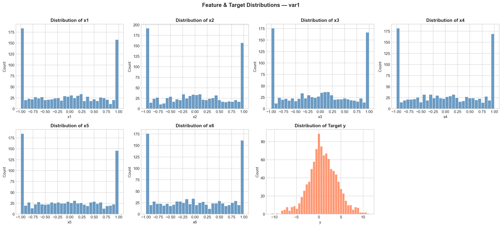
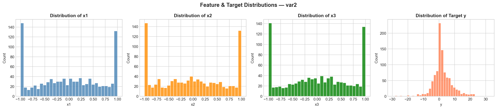
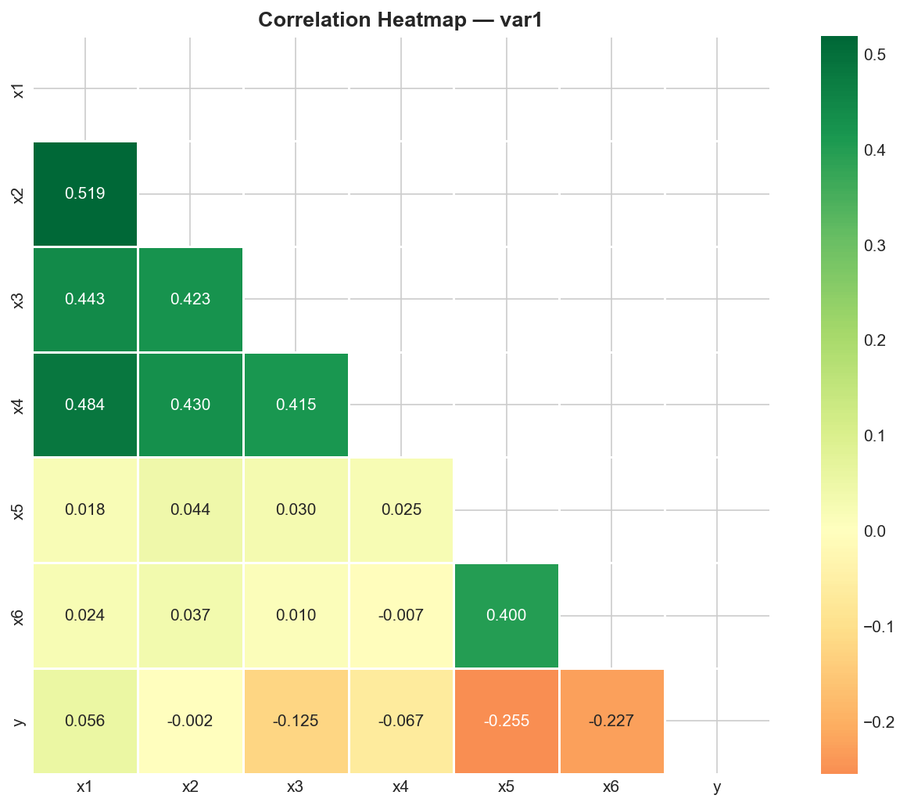
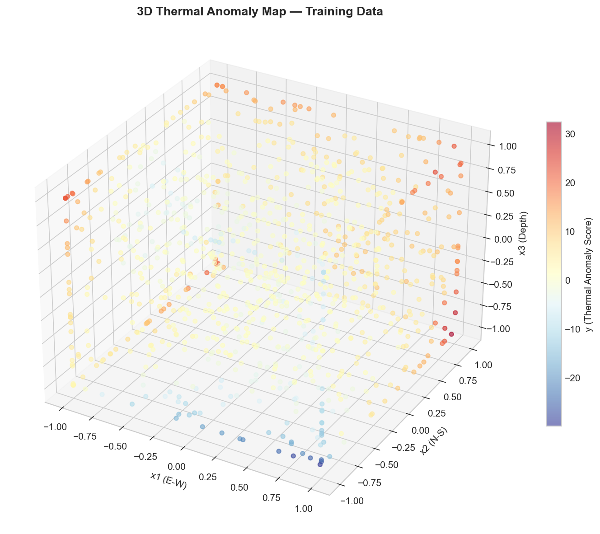
4. Model Selection Approach
The two main modeling decisions were polynomial degree and regularization strength. Ridge regression with alpha=1.0 was used as a stable proxy during degree selection because polynomial expansion creates correlated features. After choosing the degree, ElasticNet was tuned over alpha and l1_ratio.
ElasticNet was useful because L2 regularization stabilizes coefficients, while L1 regularization can remove unnecessary polynomial terms and reduce overfitting.
5. Polynomial Degree Selection
var1
For var1, degrees 1 to 10 were evaluated. Validation error decreased up to degree 5 and then increased for higher degrees. This indicates that degrees above 5 started overfitting the training data. Therefore, degree 5 was selected.
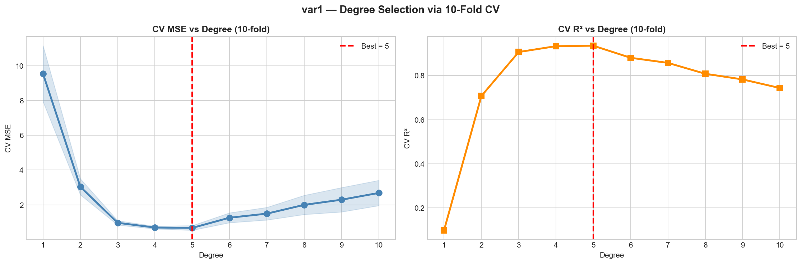
var2
For var2, degrees 1 to 20 were evaluated. The validation score improved until degree 10, after which the improvement stopped and the error slightly increased. Degree 10 was selected because it gave the best validation performance while avoiding unnecessary higher-degree complexity.
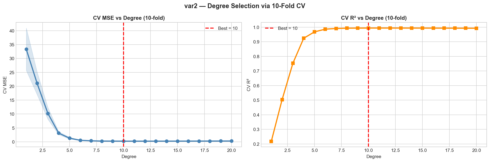
6. Final Model Details
| var1 quantity | Value |
|---|---|
| Selected polynomial degree | 5 |
| Number of polynomial features | 461 |
| Best alpha | 0.009103 |
| Best l1_ratio | 1.0 |
| Non-zero coefficients | 126 / 461 |
| Training MSE | 0.216335 |
| Training R2 | 0.979757 |
| 10-fold CV MSE | 0.297031 +/- 0.023987 |
| 10-fold CV R2 | 0.971316 +/- 0.004937 |
| var2 quantity | Value |
|---|---|
| Selected polynomial degree | 10 |
| Number of polynomial features | 285 |
| Best alpha | 0.000655 |
| Best l1_ratio | 0.1 |
| Non-zero coefficients | 253 / 285 |
| Training MSE | 0.162370 |
| Training R2 | 0.996288 |
| 10-fold CV MSE | 0.230232 +/- 0.041747 |
| 10-fold CV R2 | 0.994225 +/- 0.002097 |
For var1, l1_ratio=1.0 made the model Lasso-like and removed many weak degree-5 terms. For var2, l1_ratio=0.1 kept the model mostly Ridge-like, suitable for a response distributed across many degree-10 terms.
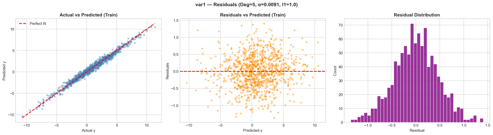
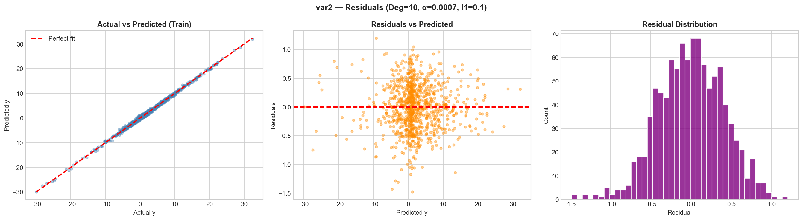
7. Prediction and Regularization Diagnostics
Prediction distributions were compared against training target distributions as a sanity check that the final polynomial models produced realistic ranges.
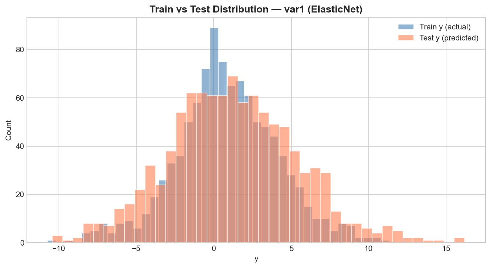
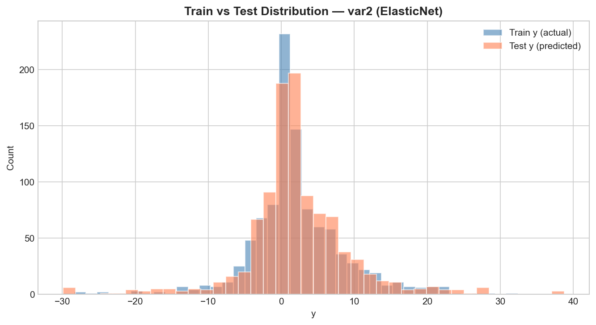
The coefficient sparsity plots further explain the different regularization behavior. var1 is much sparser because the best model uses a Lasso-like penalty, while var2 keeps most polynomial coefficients active because its fitted response is more distributed across the degree-10 feature space.
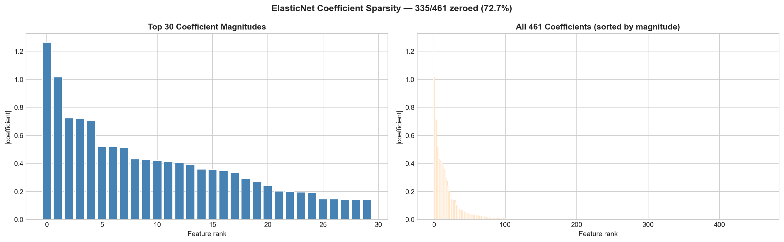
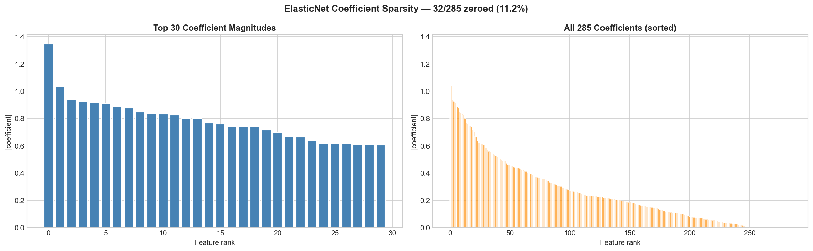
8. Conclusion
The final models are polynomial regression pipelines with cross-validated degree selection and ElasticNet regularization. Degree 5 was selected for var1 because it gave the best validation performance before overfitting began. Degree 10 was selected for var2 because it captured the higher-degree spatial structure while maintaining the best cross-validation score.
The final 10-fold CV R2 scores were 0.971316 for var1 and 0.994225 for var2. The two prediction CSV files were generated from the final fitted pipelines for assignment submission.